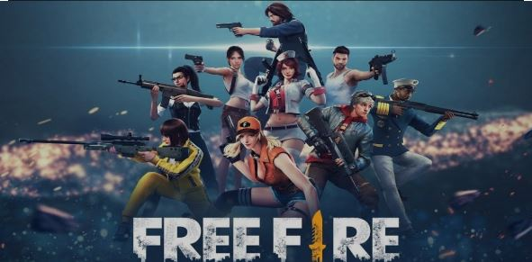

Hi this is Magendra prasad
I love travelling .i am a foodie and like to eat foods.
Hobbies:i used to watch some tamil movies and series and some reality
shows or i used to watch you tube, instagram and other social medias and i will also play basket ball
and volley ball
Sathyabama Institute of Science and Technology, formerly known as Sathyabama University, is a deemed-to-be university, located in Chennai. Sathyabama University admission 2023 is now open for UG and PG courses. Additionally, the university is inviting applications for Sathyabama All India Engineering Entrance Examination (SAEEE) 2023 for admission to B.E / B.Tech / B.Arch / B.Des programs.The last date to apply for SAEEE 2023 is March 31, 2023. Candidates seeking admission at Sathyabama University can apply online on the university’s official website - sathyabama.ac.in.Sathyabama Institute of Science and Technology, Chennai is a Christian Minority Institution established in 1987. It is a deemed-to-be University accredited with Grade ‘A’ by National Assessment and Accreditation Council (NAAC). Sathyabama Institute of Science and Technology offers various Undergraduate, Postgraduate and Doctoral Programs in the field of Engineering, Architecture, Dental, Arts, Commerce, and Science. Admission to these courses is done on the basis of the national level exams conducted all over the country. Sathyabama Institute of Science and Technology has begun registrations for B.E / B.Tech / B.Arch. / B.Des programs 2023-24 for admission through the institute-level entrance test, Sathyabama All-India Entrance Exam (SAEEE) 2023. Sathyabama Institute of Science & Technology recently concluded the placement drive for its 2020-22 batch with a placement percentage of 92.14%. Students recieved 2004 placement offers from 363 participating recruiters. Major recruiters included Cognizant, Cisco, Wipro, Capgemini, HCL, Bank of America, IBM, ICICI Bank, EY, Silicon Labs etc. The highest salary package received was INR 31 LPA & the average salary stood at INR 4.75 LPA
Garena Free Fire, also known as Free Fire (FF), is a Battle Royale game developed and published by Garena for Android and iOS. It became the most downloaded mobile game globally in 2019. As of 2021, Free Fire had surpassed 150 million daily active users. Free Fire Max, a graphically enhanced version of Free Fire, was released globally on 28 September 2021. Game modes Battle Royale mode lets a maximum of 52 players land on a random island without weapons. All of them have to survive by eliminating each other using weapons and accessories that are found in the buildings. Players have the option to play this mode solo, or in a team of 2 or 4 players. If players play this mode ranked, it will have an impact on their rank. Whereas Classic mode is just for fun and practice. There are six Battle Royale maps in Free Fire they are Bermuda, Bermuda Remastered, Kalahari, Purgatory, Alpine, and NeXTerr Clash Squad is a 4 VS 4 mode. In this mode, players use in-game money to buy weapons and other items from a shop during preparation time, and then fight against the opponent team. As a best-of-7 mode, games last from four to seven rounds. A round is won when all 4 players of one team are eliminated, either by the other team or by environmental damage. As of 2022 the game uses the same maps as the Battle Royale mode. Clash Squad can be played both as Ranked and Classic Lone Wolf is either a 1 vs 1 or "duo" (2 vs 2) version of Clash Squad mode with more complex rules. Each side will have chances to choose equipment to be used in next 2 rounds. Rounds are played best-of-5. If both sides have won 4 rounds each, then final round will begin with both sides free to `choose weapon of their choice. All players acquire basic items like vest and helmet by default from the start of the round. This mode takes place in its own map called "Iron Dome
